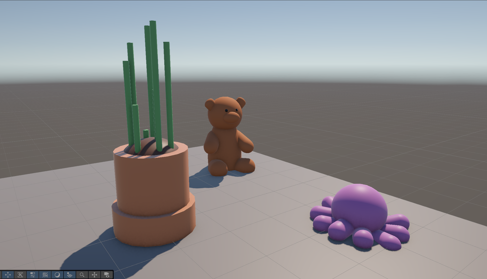

HW 1: Unity First Scene
CS 480 · Unity Scene Assignment
My Scene

Description of the Space
For this assignment, I created a 3D space in Unity using basic shapes and objects. The goal was to become familiar with the Unity editor and learn how objects can be positioned, scaled, and combined to create a larger environment.
My scene represents a small corner of a child's room, or perhaps a sentimental parent's desk. This is up to you. Regardless, it features common decor motifs, including two stuffed animals and a potted plant.
Objects and How I Built Them
I created three separate objects for this scene. One is a teddy bear, constructed out of spheres and capsules. The body is a sphere augmented to be slightly elongated, the head is a perfect sphere, and the arms and legs are rotated capsules. The snout is once again an elongates sphere and the ears are two squished capsules. Two tiny spheres form the eyes, which are a shiny and black material, while the rest of the bear is rendered in a rougher brown material. The second object is modeled after a stuffed octopus I have. I created it by generating a sphere and surrounding it with capsules, each equal in size and rotated to form the tentacles around the body. The octopus is purple, just like the one sitting on my desk! The third object was actually the first one I constructed and the roughest model here. It's a potted plant which looks like bamboo. I constructed the pot out of two cylinders, one wider and shorter than the other. Then, I placed a small sphere slightly above the cylinders to create a mound of dirt. Finally, I created the bamboo stalkes by generating a few cylinders and scaling them to be different heights.
What I Learned
One of the things I learned while working on this assignment is how difficult it is to translate our understanding of 3D space into a strict x,y,z vector format. Moving and rotating objects was difficult, as rotation axes never quite matched the rotations I intended to make. I also learned how few objects truly can be represented with the primitive shapes Unity provides. Lastly, it was surprising how time consuming modeling even the simplest shapes can be! Rotating, scaling and placing shapes to form a cohesive object takes a lot longer than I expected.